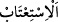

Bir önceki âyette “siz” şeklinde muhatap zamiri kullanılıp, burada ise “onlar” diyerek
onlardan gâip lafzıyla bahsedilmesi, onların hitab mevkiinden uzaklaştırılarak
Cehennemin dibine bırakılmış olduklarını anlatmak içindir.
“Ve eğer tekrar dünyaya dönüp, özür dileyip Allah’ı hoşnud etmek isterlerse,”; yani
içinde bulundukları durumdan dolayı feryad ü figan ederek arzu ettikleri sonuca ulaşmak
isterlerse “memnûn edilecek değillerdir.” Yani özürleri kabul edilmeyecek ve
istedikleri sonuç için olumlu cevap verilmeyecektir.
Böylece, sabretmelerinin ya da feryâd etmelerinin, kurtuluşlarına vesîle olmamak
bakımından hiçbir farkı olmayacaktır; ikisi de onları kurtarmayacaktır. “Artık biz
sızlansak da sabretsek de birdir; kaçıp sığınacak bir yerimiz yoktur.” (İbrahim
14/21) âyetinde anlatılan durum, buradakiyle aynı mânâya gelmektedir.
Tâcu’l-Masâdir’de der ki: (
); hoşnud ve râzı etmek demektir. (
); bir
başkasından seni hoşnud ve râzı edecek hak istemendir. Ayrıca sulh ve selâmet
istemektir. el-Kâmus’ta (
), rıza ve hoşnutluk olarak açıklanmıştır. (
) ifâdesi;
tıpkı (
) gibi “ona hoşnutluk verdi” anlamındadır; ancak buna ilaveten “Ondan
hoşnutluk ve rıza talep etti” anlamı da taşır. el-Müfredât’ta verilen bilgiler ise bunun
tam tersidir: (
) tıpkı (Elif’in izâle etme anlamına geldiği) (
) örneğinde olduğu
gibi izâle anlamında olup; onun içinde bulunduğu zorluğu yok ettim, demektir.
(
) ifâdesi de bu minvaldedir. (
) ise, kişiden içinde bulunduğu zor
durumu (
) söylemesini istemek, onun da bunu yapmasıdır. – (
), sertlik/zorluk,
hoşa gitmeyen iş, kişinin gönlünde başkasına karşı duyduğu sertlik anlamınadır.
25. Biz onlara birtakım arkadaşlar musallat ettik de onlar önlerinde ve
arkalarında ne varsa hepsini bunlara süslü gösterdiler. Kendilerinden önce gelip
geçmiş olan cinler ve insanlar için (uygulanan) azap onlara da gerekli olmuştur.
Kuşkusuz onlar hüsrana düşenlerdi.
“Biz onlara” yani kâfirlere, dünyada “birtakım arkadaşlar” yani, insî ve cinnî
şeytanlardan hemcinsler ve dostlar “musallat ettik de”; yumurta kabuğunun yumurtayı-
kaplaması gibi, onları istila ettiler.
Burada Kaderiye fırkasının aleyhine huccet vardır. Zîrâ bu durum kendileriyle hidâyet
arasında bir tercih esasına dayalıdır. Bu nedenle bu Kaderiye fırkası da onlara dost
olup âyetin mucebiyle hükmetmezler.
“Onlar önlerinde” bulunan dünya işlerini ve arzularına tâbi olmayı “ve